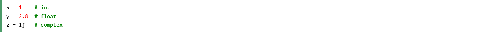
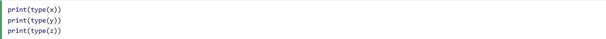
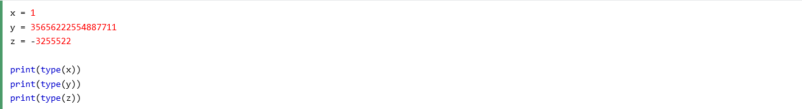
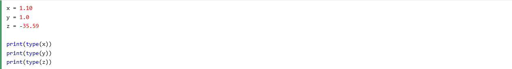
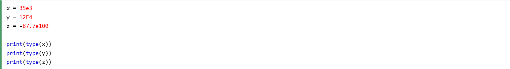
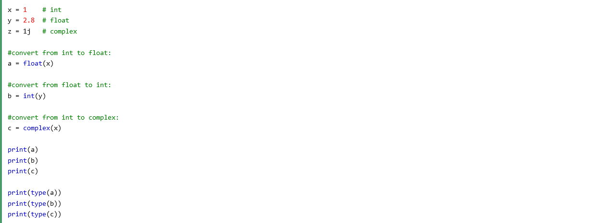
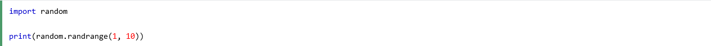

Python Numbers
You are currently on the "Python Numbers" section of the website.
If you wish to return to the Home Page, you need to click on "Ten Things to Know About Discovering Python: A Beginner's Guide" or simply click here.
There are three numeric types in Python:
• int
• float
• complex
Variables of numeric types are created when you assign a value to them:
To verify the type of any object in Python, use the type() function:
Int, or integer, is a whole number, positive or negative, without decimals, of unlimited length.
Float, or "floating point number" is a number, positive or negative, containing one or more decimals.
Float can also be scientific numbers with an "e" to indicate the power of 10.
Complex numbers are written with a "j" as the imaginary part:

You can convert from one type to another with the int(), float(), and complex() methods:
Comment: You cannot convert complex numbers into another number type.
Python does not have a random() function to make a random number, but Python has a built-in module called random that can be used to make random numbers:
